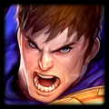

Elise -> Form Swapper | Bruiser | Black Rose
Elise is one of the best frontliners in this set. That is because of her ability and traits.
Form Swapper gives her durability and Bruiser enhances her HP, which amplifies her stats as a Tank.
Black Rose is a nice addittion but it's not the most used out of the 3. This gives the Sion created by Black Rose basic stats as ATK and HP.
And finally, the best thing in her kit, the ability, which is used to jump at the enemy backline and stunning every enemy arround her, by far one of the best abilities in this set.

Garen -> Emissary | Watcher
Garen is the best filler forntliner, no doubt.
Why is that? Simple, because the trait Emissary only need one champion to function, and the buff that garen gives with it is massive, granting max HP to allied units on his side
Watcher is also a big trait, which gives durability, but you need 2 watchers to get the buff.
Some times, when you have a nice board and units you can end up having an extra slot, perfect to put Garen to give some extra HP to your tanks while being tanky himself.
Illaoi -> Rebel | Sentinel
Illaoi is currently the best tank unit in the current Set.
You need lots of units to get any significant buff on Illaoi, but that's not the reason she's so tanky.
Being a Sentinel, she gets tons of armor and magic resist, making her already very tanky. But in addition to her skill, it gets even better.
With her skill, Illaoi takes enemies HP and grants it to herself as max HP during that fight, while gaining damage negation during her skill. This makes her the best tank unit in this set with no comparison, her only issue is not having any kind of CC (Crown Control).
Rell -> Conqueror | Sentinel | Visionary
Rell is a nice tank unit wich gives all kind of utility.
For starters, she's a 2cost making her easy to get and giving 3 traits to your team.
Conqueror is a nice trait for early stages, granting your team extra loot and gaining a DMG boost.
Just like Illaoi, having the Sentinel trait alone already makes her very bulky gaining tons of resistances.
And then, the cherry on top, having Visionary as a trait is very nice, since all visionary allies will be able to cast their skills sooner. Since most visionaries are damage oriented, having rell on the team is crucial, being able to tank for them.
And that's not all, on skill activation, Rell gains a shield and then attacks the enemies with her lance to steal Armor and Magic Resist from enemies hit.
Trundle -> Scrap | Bruiser
Trundle is not one of the prefered units for final boards, but can still give some power to your early stages
Trundle is more of a bruiser unit, tanking and doing some damage with its ability.
He gets extra HP with the Bruiser trait and can heal himself whenever he attacks with it's skill active.
Thanks to being a 1cost, it can be a very nice unit to have in early stages, since scrap can also give you an extra item to boost Trundle's stats as well as gaining a small shield.